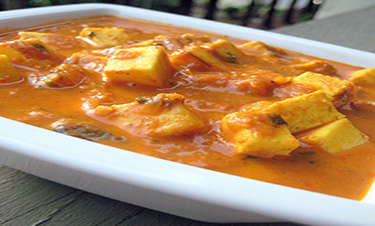

Paneer Butter Masala
Ingredients
Tomatoes- 4 to 5, Onions- 1, Cashewnuts- 1/2 cup, Butter- 4tbsp, Oil- 1 tbsp, Ginger paste- 1tbsp, Garlic paste- 1tbsp, Red chilli powder- 1tbsp, Salt, Paneer- 400 grams, Kasuri Methi- 2 tbsp, Cardamom Powder- 1/2 tsp, Garam masala- 2 tbsp, Honey- 1 tbsp, Cream- 1/2 cup
Cut the tomatoes and onions into quarters and toss them into a pan, add cashewnuts and cokk them for 20 minutes till they are not raw anymore. Let it cool and blend the mixture into a fine paste. Heat butter and oil in a pan, add ginger and garlic pastes and saute for few seconds. Add red chilli powder and the paste of onion, tomato ans cashews(strain the paste if you like). Add some salt, cover the lid of the pan and cook on a low flame for few minutes. Meanwhile dry roast kasuri methi on another pan and let it cool. To the tomato mixture, add cardamom powder, honey, garam masala and stir. Powder the roasted kasuri methi with your hands and add. Mix in the cubed paneer and cream and serve.